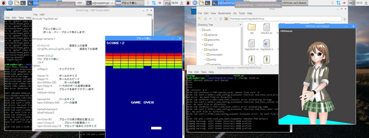

HSP : Hot Soup Processor ver3.6 / onion software 1997-2021(c)
HSP3 for Linux/Raspberry Pi
Introduction
HSP3 for Linux / Raspberry Pi is a development environment for Hot Soup Processor (HSP) that runs on Linux GUI environment (X Window System) and Raspberry Pi (Raspbian).
Development is proceeding with the aim of supporting the development environment of HSP3 on Linux, which is inexpensive and has a wide range of environments.
Raspberry Pi is attracting attention in the fields of IoT and programming education as a very compact and inexpensive device. I am.
Even now, we have prepared the execution environment for Android, iOS, WebGL (html5), etc. through the runtime HSP3Dish as well as Windows. ,
We will newly improve it so that it can be used in Linux and Raspbian (OS on Raspberry Pi) environment.

As the first version, we have released a preview version that includes a simple script editor and the HSP3Dish / HGIMG4 execution environment.
We plan to expand support with HSP3 for Windows, so please look forward to it.
The latest version is available on github with the source code.
If you are using Raspberry Pi, please go to JBOYSOFT's "Introduction to Beginners HSP Programming Raspberry Pi Version" page The introduction is explained.
| Introduction to beginners HSP programming Raspberry Pi version by JBOYSOFT > |
Linux installation
It works in the Linux GUI environment (X Window System). Some features work using OpenGL and SDL libraries. If you can connect to the network, get the repository directly with the git command.
git clone http://github.com/onitama/OpenHSP
If you have an archive, extract the contents to any directory and compile the source. To compile, you need an environment where you can run gcc and make. The following libraries are required when compiling, so please check in advance.
OpenGL ES2.0 or later / EGL SDL1.2 gtk+-2
For Debian (Ubuntu), you can install the library from the package manager as follows.
sudo apt-get update sudo apt-get install libgtk2.0-dev sudo apt-get install libglew-dev sudo apt-get install libsdl1.2-dev libsdl-image1.2-dev libsdl-mixer1.2-dev libsdl-ttf2.0-dev sudo apt-get install libgles2-mesa-dev libegl1-mesa-dev
The repository contains only the source, so you need to compile it with make. (If it doesn't compile correctly depending on your Linux version or distribution, you'll need to fix it.)
cd OpenHSP make
The necessary tools have been compiled and HSP3 is ready for use.
Raspberry Pi installation
 It runs on Raspberry Pi, Raspberry Pi2, Raspberry Pi3, Raspberry Pi4, Raspberry Pi zeo.
It runs on Raspberry Pi, Raspberry Pi2, Raspberry Pi3, Raspberry Pi4, Raspberry Pi zeo.
It runs on Raspbian OS. (Recommended version is September 2017 Kernel version 4.9 or later)
Please use it with Raspbian running and a keyboard and mouse connected in advance.
hsp3dish, hsp3gp (HGIMG4) and hsed (script editor) only work in GUI environment.
Extract the latest version from github to any directory and compile the source. To compile, you need an environment where you can run gcc and make.
git clone http://github.com/onitama/OpenHSP cd OpenHSP
Additional libraries are required when compiling. Setup is executed by executing the following command while connected to the network.
./pisetup.sh
The archive contains only the sources and must be compiled by make. (If it doesn't compile correctly depending on the version or distribution of Raspbian, you need to fix it.)
make -f makefile.raspbian
Execute the make command in the directory where the contents of the archive are expanded.
The necessary tools have been compiled and HSP3 is ready for use.
* For Raspberry Pi 4, please install with make in the same way as Linux. * Raspberry Pi 4 does not support full-screen execution
Usage
After installation, the following command will be generated.
hsed script editor (simplified version) hspcmp HSP3 code compiler hsp3cl HSP3 command line runtime hsp3dish HSP3Dish runtime hsp3gp HGIM G4 runtime
Script Editor (Simplified Version) is a GUI application that allows you to write and execute HSP3 scripts. It has basic script editing and load / save functions. You can start it with the following command.
./hsed
You can run the script you are editing by pressing the [F5] key or selecting "Run" from the "HSP" menu.
The current version uses hsp3dish as the standard runtime.
The sample code corresponding to HSP3Dish is included in the sample folder, so please try it.
The character code of the script is treated as UTF-8. Please note that it is different from the character code (SJIS) used by Windows.
If you want to execute the script from the command line, you need to create an HSP object file with hspcmp.
./hspcmp -d -i -u test.hsp
In the above example, the object file "test.ax" is generated from the "test.hsp" file. Pass the generated object file to the runtime for execution.
./hsp3cl test.ax
In the above example, "test.ax" is run at the HSP3 command line runtime.
Similarly, you can execute scripts tailored to the runtime such as "hsp3dish" and "hsp3gp".
(A GUI environment is required to execute "hsp3dish" and "hsp3gp".)
The Raspberry Pi version runs in full screen. To interrupt the execution, press [ctrl] + [C] or [esc]. Please note that you may not be able to interrupt if the keyboard is not recognized correctly. In addition to the GUI editor, it is also possible to execute in the form of "./hsp3dish ****. Ax" from the command line.
| Go to the HSP3Dish page | |
| HSP3Dish Online Manual |
About exec and devprm instructions
Both the Linux version and the Raspberry Pi version can call shell commands with the exec command. It is also possible to output a character string to a device on the file system with the devprm instruction.
devprm "/sys/class/gpio/export", "2"
If you write like, "2" will be output to "/ sys / class / gpio / export". It works the same as running "echo 2> / sys / class / gpio / export" from the shell.
GPIO input / output of Raspberry Pi
In Raspberry Pi version, GPIO input / output is extended by devcontrol (gpio) instruction.
To control GPIO output, write as follows.
devcontrol "gpio", port number, output value (It can also be described as "gpio port number, output value")
For the port number, specify the GPIO port numerically. For the output value, specify 1 (ON) or 0 (OFF) as a numerical value to control the output of the digital port. When inputting, describe as follows.
devcontrol "gpioin", port number (It is also possible to write "gpioin (port number)" as a function)
The system variable stat is assigned 0 or 1 after the instruction is executed.
(If an error occurs, a negative value will be assigned.)
GPIO input / output can be used not only from hsp3dish but also from hsp3cl.
Raspberry Pi I2C input / output
In the Raspberry Pi version, the extension to input / output with the I2C device is done by the devcontrol (i2c ~) instruction.
For I2C control, I2C must be enabled in the Raspberry Pi option settings. (If I2C control is not performed, no setting is required.) When I2C control is performed, describe as follows.
devcontrol "i2copen", slave address, channel (It can also be described as "i2copen slave address, channel") "Channel" is a number that identifies when multiple devices are specified at the same time. (Integer value from 0 to 31) It can be omitted (0) when controlling a single device. i2copen will be able to control the device at the specified address. The result is returned in the system variable stat. If it is 0, it will be successful, otherwise it will be an error.
To output the data, write as follows.
devcontrol "i2cwrite", data value, data size, channel (It can also be described as "i2c write data value, data size, channel") The data value is a 32-bit integer value handled by HSP. If the data size is 0 or omitted, only 8bit (1byte) is output. The data size can be 1,2,3,4. The size of 1 to 4 bytes is output for each.
When entering the data, write as follows.
devcontrol "i2cread", channel (It is also possible to write "i2cread (channel)" as a function) devcontrol "i2creadw", channel (It is also possible to write "i2creadw (channel)" as a function)
The result is assigned to the system variable stat after the instruction is executed. i2cread gets the value of 8bit (1byte), and i2creadw gets the value of 16bit (2byte). (If an error occurs, a negative value will be assigned.) I2C control can be used not only from hsp3dish but also from hsp3cl.
Copyright and license
HSP3 for Linux / Raspberry Pi is treated as a derivative of OpenHSP, and the license is also a modified BSD license compliant with OpenHSP / HSP3.
------------------------------------------------------------------------------- Hot Soup Processor (HSP) Copyright (C) 1997-2021, Onion Software/onitama, all rights reserved. Made with base technology of OpenHSP. OpenHSP Copyright (C) 1997-2021, Onion Software/onitama, all rights reserved. These softwares are provided by the copyright holders and contributors "as is" and any express or implied warranties, including, but not limited to, the implied warranties of merchantability and fitness for a particular purpose are disclaimed.